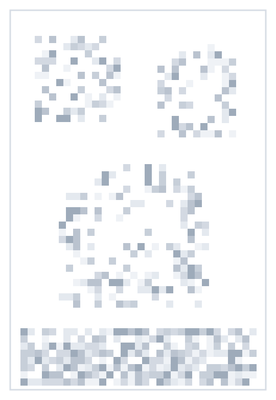

跳到互动工作区
◇
图纸工坊
从图纸到模型
互动演示
体验说明
DRAWING TO MODEL / 交互体验
你的判断，让模型更进一步。
选择答案，或直接说出修改要求。体验与建模助手一起，把细节逐一确认。
图纸脱敏 · 全程模拟数据
体验案例
/
DEMO-003
六角扳头
等待开始
↶ 修改记录
↻ 重新体验
开始体验
→
◇ 三维模型
▧ 对照图纸
示例半成品
⌄
案例图纸
已脱敏
⤢

图纸内容已遮挡
保留交互体验，隐藏工程细节
马赛克示意素材 · 非生产图纸
当前浏览器无法显示三维模型。你仍可在右侧体验问答流程。
半成品预览
拖动旋转
·
滚轮缩放
X
Y
Z
34.64 × 30.00 × 30.00 mm
◇
□
▱
◧
⤢
剖切预览 · 仅改变显示
×